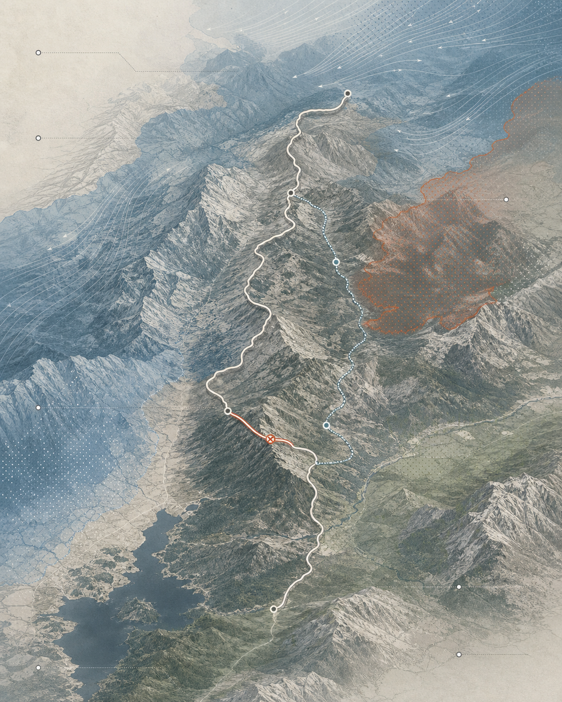

A recommendation
that can say no.
California route · current decision
Current fitGood with caution
- Wind
- 18 mph
- Heat
- Low
- Rain
- 12%
- Access
- Open
WatchWind + route access
Either can change the call.
Plan BNearby alternative
Lower exposure, alternate access.